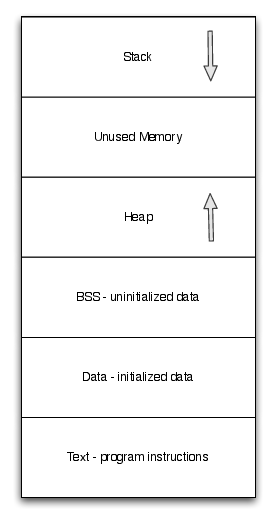
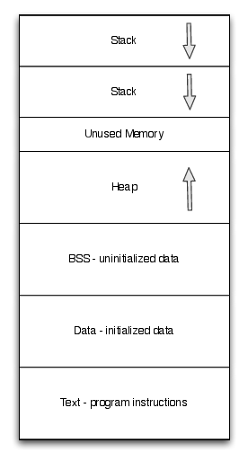

Introduction to Processes¶
- An executing program or job
- Components
- Memory address space
- Program image
- Handles to files
- Interprocess communication
- Every process has a parent
- top most process in UNIX is “init”
- Windows top most processes are:
- system.exe - OS kernel
- csrss.exe - handles user mode win32 calls
- wininit.exe - manages system services
- explorer.exe - OS shell
- winlogin.exe - OS login service
Process Memory Layout¶
- Text - machine instructions of a program.
- Data - initialized static data and constants
- BSS - uninitialized static data
- Heap - dynamic memory of a process
- one or more per process
- Stack - local variables, call stack, return values
- one per thread for kernel mode threads
- one per n-threads for user mode threads
- layout of and allocation of text, data, bss, and initial values for first thread’s stack and heap are the responsibility of the loader
- management of stack and heap are through the process’s runtime library and program instructions
Process Memory Layout¶
Memory Layout
Multithreaded Memory Layout¶
Memory Layout for Multithreaded Programs
Preliminaries¶
- Code for examples in maintained at https://github.com/gkthiruvathukal/systems-code-examples
- You can use
git clone https://github.com/gkthiruvathukal/systems-code-examplesto clone to a foldersystems-code-examples. - All subsequent examples that are full-working demonstrations will be referenced as
systems-code-examples/<example-name>. - To run examples, make sure you have gcc, cmake, and make on your computer.
- We only have tested on Ubuntu Linux, MacOS, and Windows Subsystem for Linux 2 (with Ubuntu 20.04 LTS). Most others should work.
Examine Process Layout Example¶
Most of our examples are written in C with some C++.
Getting the code
git clone https://github.com/gkthiruvathukal/systems-code-examplescd systems-code-examples/c_introGenerate the Makefile using cmake:
$ cd c_intro $ cmake . -- The C compiler identification is GNU 9.3.0 -- The CXX compiler identification is GNU 9.3.0 -- Check for working C compiler: /usr/bin/cc -- Check for working C compiler: /usr/bin/cc -- works -- Detecting C compiler ABI info -- Detecting C compiler ABI info - done -- Detecting C compile features -- Detecting C compile features - done -- Check for working CXX compiler: /usr/bin/c++ -- Check for working CXX compiler: /usr/bin/c++ -- works -- Detecting CXX compiler ABI info -- Detecting CXX compiler ABI info - done -- Detecting CXX compile features -- Detecting CXX compile features - done >> Linux -- Configuring done -- Generating done -- Build files have been written to: /home/gkt/Work/systems-code-examples/c_intro
Run make to crate the executable:
$ make Scanning dependencies of target c-intro-demo [ 20%] Building CXX object CMakeFiles/c-intro-demo.dir/main.cc.o [ 40%] Building CXX object CMakeFiles/c-intro-demo.dir/debug.cc.o [ 60%] Building CXX object CMakeFiles/c-intro-demo.dir/list.cc.o [ 80%] Building CXX object CMakeFiles/c-intro-demo.dir/tests.cc.o [100%] Linking CXX executable bin/c-intro-demo [100%] Built target c-intro-demo
Note that for all of our examples, the output executable appears in the bin subdirectory.
Note also that almost all of our examples use cmake and make as shown here.
Run the layout shell script, which shows the size of the text, data, and bss in bytes:
$ ./layout section size addr .text 3957 4352 .data 24 20480 .bss 8 20504
Loading Programs¶
- loader allocates memory for executable’s text, data, bss, heap, and stack. and loads program’s image into memory
- loader gets information from OS where shared libraries are already allocated in memory and loads the ones that are not already loaded. each shared library has its own text, data, and bss
- loader goes through executable and adjusts the list of external symbols to point to the correct spots in memory (to shared libraries)
- try the
nmcommand to see the symbols in a compiled object/executable. - once program is ready, loader invokes
_start()method _start()calls_init()for each shared library_start()initializes static constructors of objects defined as global variables_start()calls main() and program begins
more about GCC pic option¶
Based on the man page for gcc
Generate position-independent code (PIC) suitable for use in a shared library, if supported for the target machine. Such code accesses all constant addresses through a global offset table (GOT). The dynamic loader resolves the GOT entries when the program starts (the dynamic loader is not part of GCC; it is part of the operating system). If the GOT size for the linked executable exceeds a machine-specific maximum size, you get an error message from the linker indicating that -fpic does not work; in that case, recompile with -fPIC instead. (These maximums are 8k on the SPARC and 32k on the m68k and RS/6000. The 386 has no such limit.)
Loading shared libraries (.so)¶
- Static libraries do not contain position independent code
- Static libraries are simply a collection of unlinked
.o(object) files - The dynamic linker simply loads the text, data, and bss sections of each object file into the program’s address space
Position Independent Code Example¶
Get the code
git clone https://github.com/gkthiruvathukal/systems-code-examplescd systems-code-examples/picFor this example, you can build it using
make -f Makefile.pic.The main purpose of this example is to show the difference between generating PIC vs. non-PIC.
main.cc¶
1 2 3 4 5 6 7 8 9 10 11 12 13 14 | #include <unistd.h>
const char *msg = "abcdefg";
int main(int argc, char* argv[]) {
const char *x = msg + 1;
write(1, x, 1);
return (0);
}
|
main.nopic.s - non-position independent code (gcc -fno-pic)¶
1 2 3 4 5 6 7 8 9 10 11 12 13 14 15 16 17 18 19 20 21 22 23 24 25 26 27 28 29 30 31 32 33 34 35 36 37 38 39 | .file "main.c"
.text
.globl msg
.section .rodata
.LC0:
.string "abcdefg"
.data
.align 8
.type msg, @object
.size msg, 8
msg:
.quad .LC0
.text
.globl main
.type main, @function
main:
.LFB0:
.cfi_startproc
endbr64
pushq %rbp
.cfi_def_cfa_offset 16
.cfi_offset 6, -16
movq %rsp, %rbp
.cfi_def_cfa_register 6
subq $32, %rsp
movl %edi, -20(%rbp)
movq %rsi, -32(%rbp)
movq msg(%rip), %rax
addq $1, %rax
movq %rax, -8(%rbp)
movq -8(%rbp), %rax
movl $1, %edx
movq %rax, %rsi
movl $1, %edi
call write
movl $0, %eax
leave
.cfi_def_cfa 7, 8
ret
|
main.nopic.s - non-position independent code (gcc -fpic, default option)¶
1 2 3 4 5 6 7 8 9 10 11 12 13 14 15 16 17 18 19 20 21 22 23 24 25 26 27 28 29 30 31 32 33 34 35 36 37 38 39 40 | .file "main.c"
.text
.globl msg
.section .rodata
.LC0:
.string "abcdefg"
.section .data.rel.local,"aw"
.align 8
.type msg, @object
.size msg, 8
msg:
.quad .LC0
.text
.globl main
.type main, @function
main:
.LFB0:
.cfi_startproc
endbr64
pushq %rbp
.cfi_def_cfa_offset 16
.cfi_offset 6, -16
movq %rsp, %rbp
.cfi_def_cfa_register 6
subq $32, %rsp
movl %edi, -20(%rbp)
movq %rsi, -32(%rbp)
movq msg@GOTPCREL(%rip), %rax
movq (%rax), %rax
addq $1, %rax
movq %rax, -8(%rbp)
movq -8(%rbp), %rax
movl $1, %edx
movq %rax, %rsi
movl $1, %edi
call write@PLT
movl $0, %eax
leave
.cfi_def_cfa 7, 8
ret
|
What’s the difference?¶
1 2 3 4 5 6 7 8 9 10 11 12 13 14 | diff main.pic.s main.nopic.s
7c7
< .section .data.rel.local,"aw"
---
> .data
28,29c28
< movq msg@GOTPCREL(%rip), %rax
< movq (%rax), %rax
---
> movq msg(%rip), %rax
36c35
< call write@PLT
---
> call write
|
Static Libraries - Evaluation¶
Strengths
- Makes sense when re-use is not desired. A good example would be installer executables with very large .data segments.
- Faster first load loading time than shared libraries.
- Fewer instructions generated for GOT lookups (minor issue)
Weaknesses
- Much larger memory footprint. Little reuse of common code between applications.
Libraries vs. Statically-Linked Programs¶
Dynamic Linking advantages:
- Memory footprint
- Code reuse
- Improvement with new versions of shared libraries
- Smaller executables
Static linking advantages:
- When deploying software, dependencies are less of a concern (e.g. missing dependencies, incorrectly upgraded dependencies, custom patches and alterations to shared code)
- Versioning and path problems are less of a concern
- Code obfuscation can obfuscate across object files
- Compiler optimizers can optimize across object files
Process Protection¶
In modern operating systems with virtual memory and privileged separation the following protections are afforded:
- One process cannot read the memory of another process (except when explicitly permitted)
- A process can fully manage the memory that it can access - garbage collection, explicit allocation/deallocation, method call and parameter passing standards, stack management, etc.
- A crash, exception, resource starvation, deadlock, or other fault in one process does not directly affect other processes
- While mapped to the same address space, the process cannot modify kernel memory or memory otherwise protected by the operating system (such as text pages).
Process Creation with fork()¶
From the fork() man page:
fork()creates a new process by duplicating the calling process. The new process, referred to as the child, is an exact duplicate of the calling process, referred to as the parent, except for the following points:- the child has its own unique process id (PID)
- the child’s parent PID is the same as the parent’s PID
- the parent’s threads are not recreated on the child
interesting point: in Linux, fork() != fork(); fork() calls clone()
From the man page:
fork()returns the child PID to the parentfork()returns 0 to the childfork()returns -1 if the child cannot be created
fork() example¶
See systems-code-examples/fork if you want to run this program.
$ cd systems-code-examples/fork
$ cmake
$ make
1 2 3 4 5 6 7 8 9 10 11 12 13 14 15 16 17 18 19 20 21 22 23 24 25 26 27 28 29 30 31 32 33 | #include <stdio.h>
#include <unistd.h>
#include <fcntl.h>
#include <string.h>
int main(int argc, char* argv[]) {
int SomeValue = 100;
int pid = fork();
int fd = open("test_file", O_WRONLY|O_CREAT|O_TRUNC, 0666);
const char *parentMessage = "1111111";
const char *childMessage = "22222222222222\n";
if(pid > 0) {
printf("hello from the parent process, chid pid = %d\n", pid);
sleep(2);
printf("parent's SomeValue = %d\n", SomeValue);
write(fd, parentMessage, strlen(parentMessage) * sizeof(char));
} else if(pid == 0) {
printf("hello from the child process\n");
SomeValue = 200;
printf("child's SomeValue = %d\n", SomeValue);
write(fd, childMessage, strlen(childMessage) * sizeof(char));
} else {
printf("fork() failed!!\n");
}
close(fd);
return 0;
}
|
Process Creation with clone()¶
- similar to
fork()in that a child process is created. clone()allows different parts of the parent process to be shared with the child process- flags for creating a light weight process (kernel thread):
CLONE_FS- share FS information (chroot, chdir, umask)CLONE_FILES- share file descriptor tableCLONE_SIGHAND- share signal handlersCLONE_VM- share page table
- many more flags exist - don’t forget this little known capability!
- glibc’s version of
fork(), callsclone()without any of these flags clone()not present in every UNIX OS (available in Linux but not Minix)
Windows CreateProcess() and CreateThread()¶
- Different from UNIX
fork()/clone()- parts of processes are not shared - Windows has two flavors:
CreateProcess()- creates a new process, equivalent of callingfork()thenexecve()in UNIXCreateThread()- equivalent of creatingclone()with thread flags
- Is this a disadvantage?
- For most use cases and most programs, no.
- The vast majority of calls to
clone()in UNIX are equivalent toCreateThread() - The vast majority of calls to
fork()in UNIX are equivalent toCreateProcess()
Emulating fork() on Windows¶
A well known system, Cygwin, implements fork() on Windows as follows:
- cygwin.dll calls
CreateProcess()to create a suspended child process - parent process calls
setjmp()to save registers - parent process copies its BSS and DATA sections to the child’s address space.
- parent wakes child up and waits on a named mutex (mutual exclusion mechanism).
- child wakes up, realizes it was a forked process, then longjumps to the saved jump buffer. child unlock’s
- parent’s named mutex and waits on a second mutex
- parent wakes up, copies its stack and heap to the child process. release’s child’s named mutex
- Child wakes up and copies any memory mapped regions the parent signals to the child through shared memory
fork()system call in Cygwin does not use copy on write, but “copy on fork”. this is similar tofork()implementations in early UNIX operating systems
Causes of process termination¶
- Normal exit–return from
main(...) - Error exit–return from
main(...)with an error code - Fatal error
- segfault/bus error–process tries to read/write inaccessible memory or write to read-only memory.
- stack overflow–stack pointer grows to larger than stack area
- protection fault–trying to run privileged instructions such as enabling/disabling interrupts
- instruction faults–divide by zero
- External termination by another process either through signals or system calls
wait() and waitpid() examples¶
See systems-code-examples/wait if you want to run this program.
1 2 3 4 5 6 7 8 9 10 11 12 13 14 15 16 17 18 19 20 21 22 23 24 | #include <sys/types.h>
#include <sys/wait.h>
#include <stdio.h>
#include <stdlib.h>
#include <unistd.h>
int main(int argc, char* argv[]) {
pid_t pid = fork();
if(pid == 0) {
abort(); //child process exits
}
int status;
wait(&status); // wait for child to exit
if(WIFEXITED(status)) {
printf("normal exit. exit code = %d\n", WEXITSTATUS(status));
} else if(WIFSIGNALED(status)) {
printf("abnormal termination, signal number = %d\n", WTERMSIG(status));
} else if(WIFSTOPPED(status)) {
printf("child stopped, signal number = %d\n", WSTOPSIG(status));
}
}
|